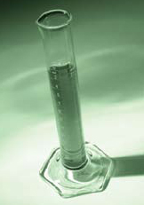

| Purpose Do all acids behave similarly? |
|
Materials
|
 |
Click on photos to enlarge.
| CAUTION! | |
| Use gloves, safety glasses,
and a lab apron for this activity. |
Procedure
| step 1: | Prepare a data table with two columns. Use the names of the two acid solutions listed in the materials as the headings for your table.
|
|||||||||||
| step 2: | Use the grease pencil or waterproof marker to label one of the test tubes "Ethanoic Acid." Place the test tube into the test tube rack.
|
|||||||||||
| step 3: | Transfer exactly 5.00 mL of ethanoic acid to one of the graduated cylinders. Use an eyedropper to ensure the meniscus is at the 5.00-mL mark on the cylinder.
|
|||||||||||
| step 4: | Transfer the ethanoic acid in the graduated cylinder to the “Ethanoic Acid” test tube.
|
|||||||||||
| step 5: | Transfer enough of the ethanoic acid from the test tube to cover the bottom of one of the 50-mL beakers. Use the conductivity meter to test the solution. Record your observations in your data table. Use the acid in the beaker to measure the pH. Place one of the strips of pH paper into the remaining solution and record the pH of the solution in a data table. (If you are using a pH meter, you may have to use a larger volume of acid in the beaker to cover the electrode at the bottom of the meter. Ensure that you rinse the electrode before testing the pH of the second solution.)
|
|||||||||||
| step 6: | Repeat steps 2 to 5 using the hydrochloric acid solution.
|
|||||||||||
| step 7: | Place a strip of magnesium into each of the test tubes. Record the initial response of the magnesium to the acid and the length of time until a reaction no longer occurs in each of the test tubes. Estimate the amount of magnesium remaining in each test tube.
|

Analysis
Use the data collected to prepare a list of similarities and differences between ethanoic acid and hydrochloric acid.